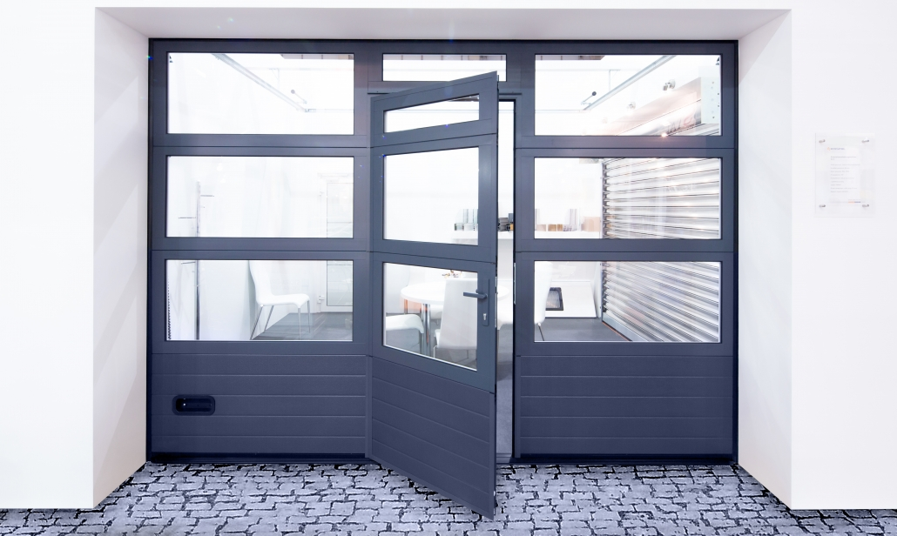
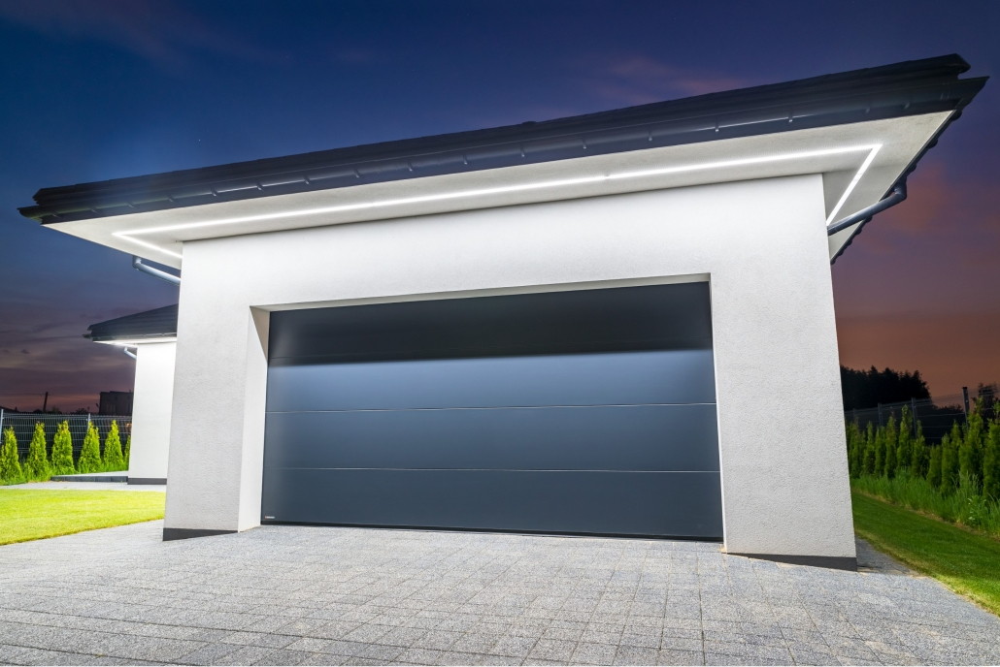
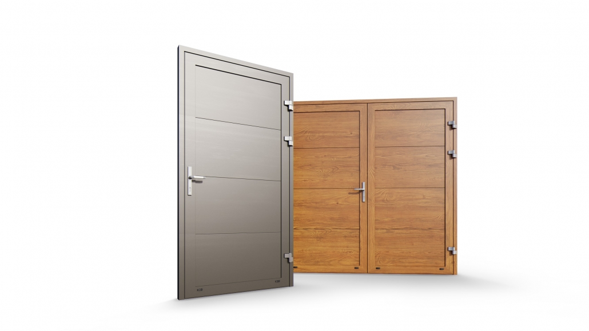
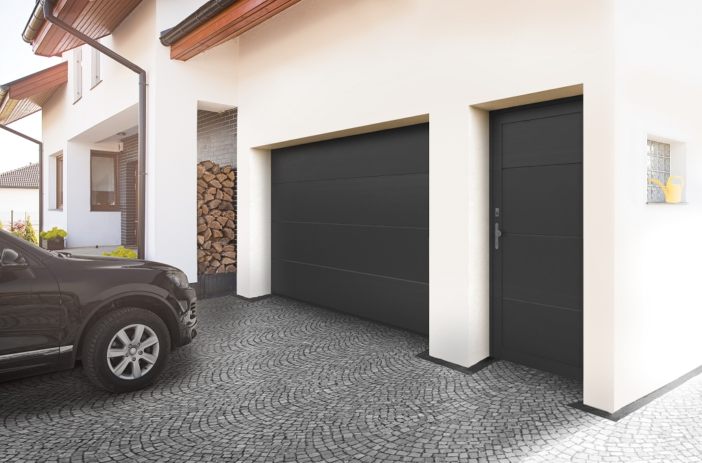
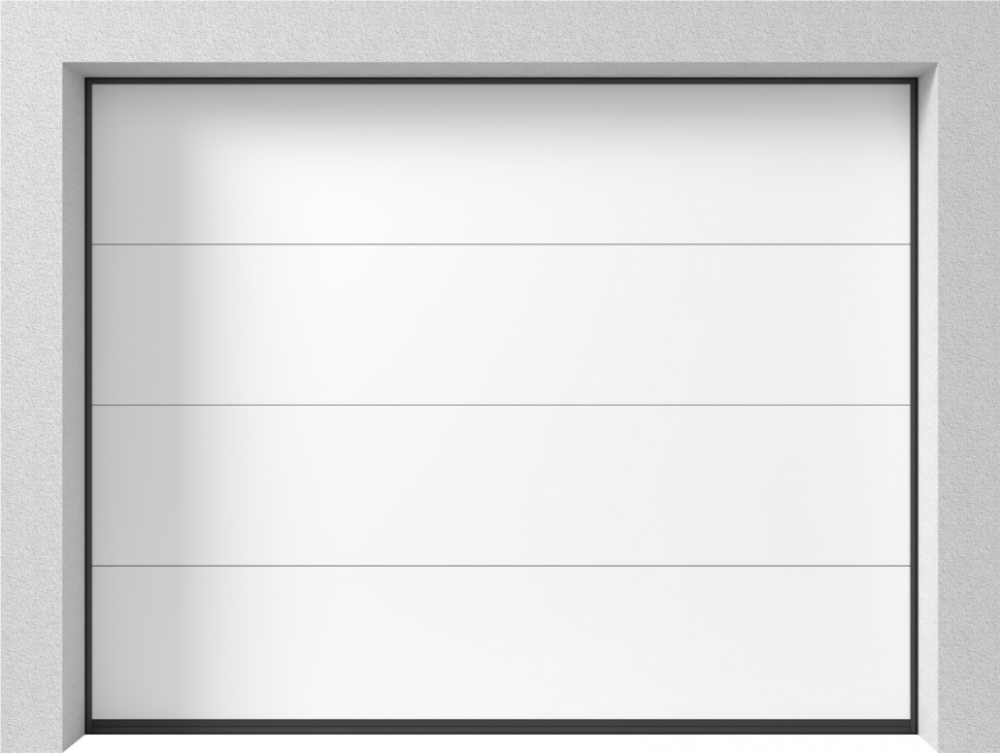
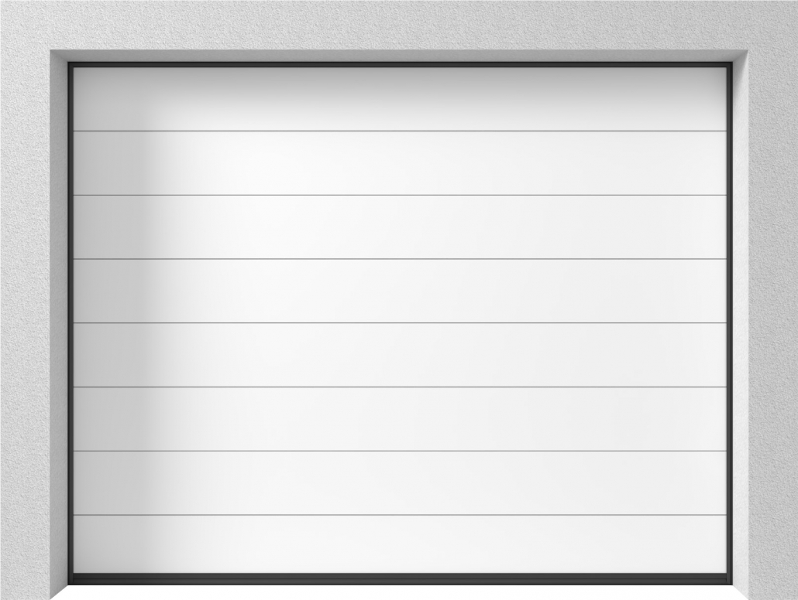
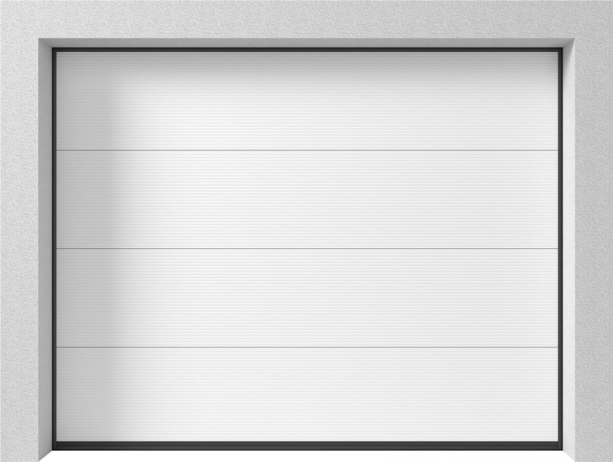

Haben Sie Fragen? Rufen Sie uns an:
+43 676 9000015
FENSTER
FENSTER
KUNSTSTOFF ALU FENSTER
HOLZ ALU FENSTER
HOLZFENSTER
TÜREN
TORANLAGEN
SONNEN-UND INSEKTENSCHUTZ
KONTAKT
Toranlagen
Oberfläche
Wir bieten an: Garagentore nach Maß, Nebeneingangstüren, Sektionaltore und Rolltore







BERATUNGSTERMIN VEREINBAREN
+43 676 9000015